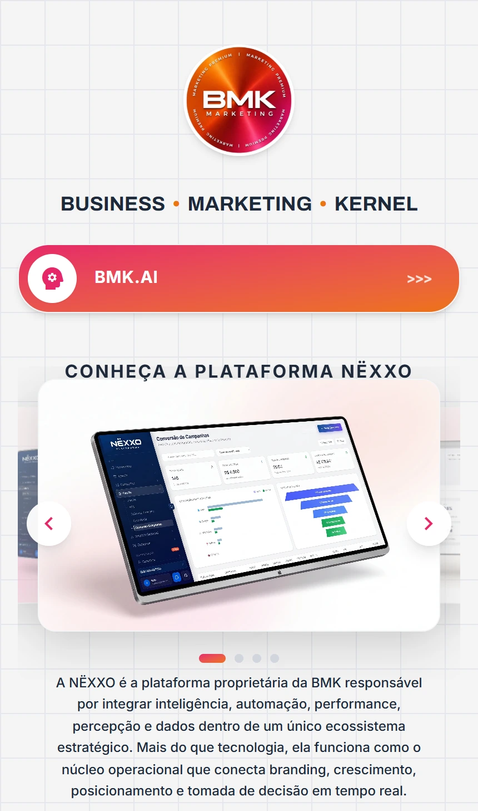
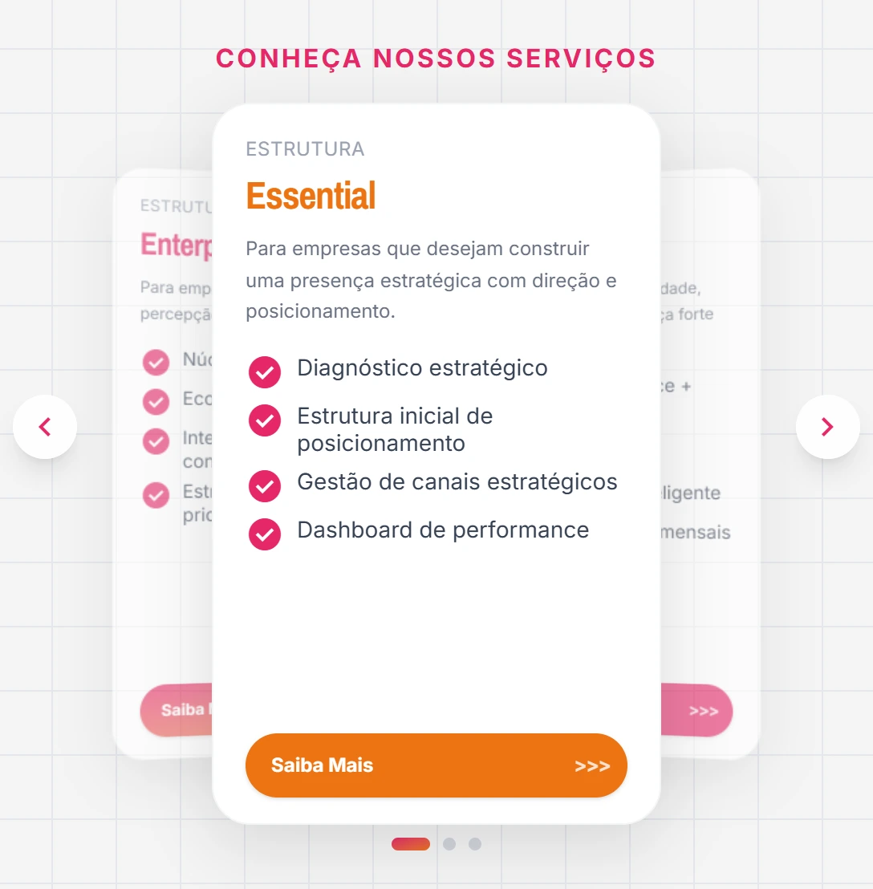

Prioridade explícita
O acesso à BMK.AI recebe contraste próprio. A diferença de tratamento indica uma escolha de hierarquia entre os destinos.
Design & desenvolvimento
UI / UX
Uma entrada para todo o ecossistema BMK.
 Ampliar
Ampliar O Blink da BMK reúne iniciativas, canais e serviços em uma entrada centralizada. Seu conteúdo vai além das redes sociais: inclui acesso à BMK.AI, apresentação da NËXXO e opções de serviços.
O desafio de interface é dar uma ordem a esses destinos sem tratar todos como equivalentes. A abertura destaca a BMK.AI, seguida por uma apresentação visual da NËXXO e pelos demais caminhos.
O acesso à BMK.AI recebe contraste próprio. A diferença de tratamento indica uma escolha de hierarquia entre os destinos.
A apresentação da NËXXO usa uma sequência visual, em vez de depender exclusivamente de uma descrição longa.
Os níveis de serviço aparecem como opções separadas. A organização torna as alternativas localizáveis dentro de uma página compacta.

Ampliar
AmpliarA implementação combina atalhos, carrosséis e apresentação de serviços em uma coluna central. A navegação direta e a exploração do conteúdo coexistem, com controles para avançar e voltar nas sequências.
O desenvolvimento desta página organiza acessos a produtos e serviços. A presença da NËXXO e da BMK.AI nas capturas não significa atribuição de autoria integral dessas plataformas.
O endereço público foi inspecionado sem envio de formulários ou mensagens. Este caso descreve a interface observada, sem apresentar resultados comerciais como se tivessem sido medidos.
Visitar o site